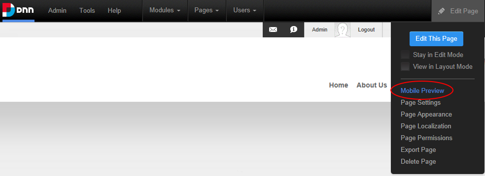
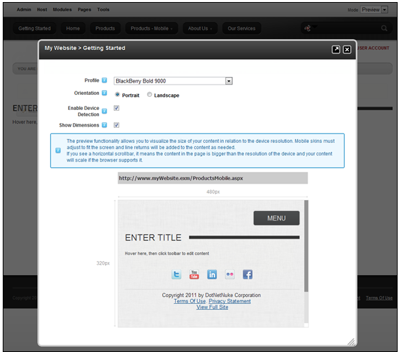

Previewing Your Mobile Device Site
How to preview your mobile device site using the Preview mode on the Control Panel.
- Select Edit Page > Mobile Preview from the ControlBar Control Panel. Alternatively, if you are using the RibbonBar, select Preview mode. See "Overview of the RibbonBar Control Panel"

- Select a device profile from the Profile drop down list.
- These profiles are the same Device Profiles found in the Device Preview Management Module.
- At Orientation, choose the viewing angle.
- Portrait or Landscape
- Depending on the particular device profile, Portrait mode can be a wider viewing angle than Landscape, one example is the BlackBerry Playbook default profile.
- At Enable Device Detection, select this to enable Redirections on the previewed page.
- Enabling this option will simulate the device experience. If the selected device profile from Step 1 satisfies any of the defined Redirection Rules, the Preview will show the page that it would be redirected to.
- Disabling this option, the preview will only show the current page in the defined aspect ratio, no redirects will occur.
- Redirects will also occur if the current viewing device satisfies any of the defined Redirection Rules.
- At Show Dimensions, shows the screen dimensions defined for the specified device profile.

Preview Mode: Showing the Products page being redirected to Products-Mobile page in a BlackBerry Bold 9000 Portrait aspect ratio.
-
See "About Mobile Devices Support"
-
See "Creating a MicroSite"
-
See "Creating a Standalone Mobile Site"
-
See "Adding Content"
-
See "About the Mobile Skin"